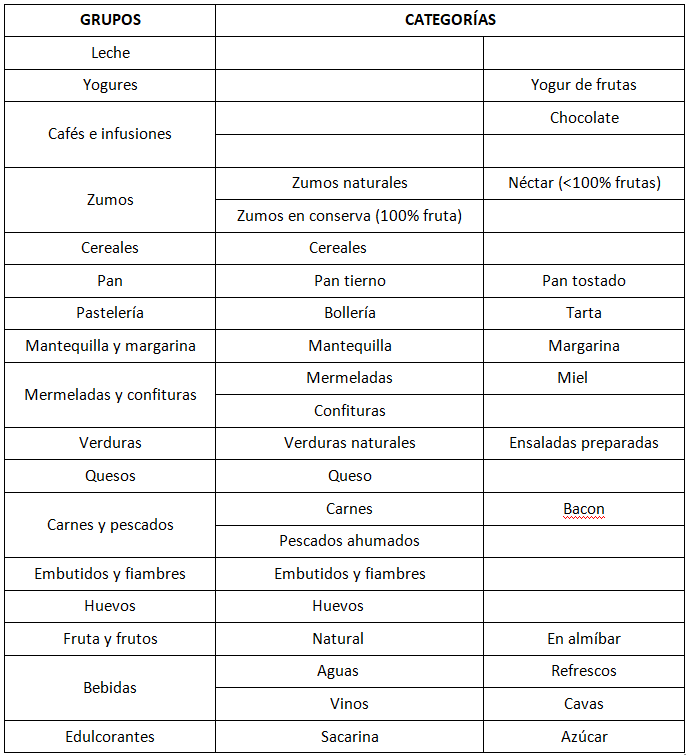
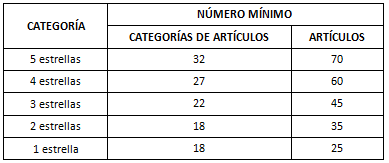

A lo largo de la Norma se hace contante referencia a la calidad de los alimentos, algo que describe puntualmente en el apartado correspondiente. Lógicamente, también en este apartado insiste en este aspecto, como también en la variedad de productos y categorías de los mismos, de forma que sea amplio y diferenciado de las jornadas anteriores. Otro aspecto que trata es la reposición de aquellas ofertas que se agoten y la retirada de las mesas de los platos empleados por los clientes. En ambos casos se insiste en el desarrollo de estas actividades con prontitud.
A continuación se detallan las diferentes categorías que, con carácter meramente informativo, componen el buffet de desayunos:

Las categorías que aparecen sombreadas son obligatorias para los hoteles de 5, 4 y 3 estrellas, si bien esta gama es inferior para el resto de categorías. Las categorías no obligatorias en las categorías inferiores aparecen señaladas con el asterisco (*). Además, el zumo de naranja natural pasa a ser obligatorio para los hoteles, exclusivamente, de 5 estrellas, siendo a petición del cliente para los de 4 estrellas. También, para la categoría de huevos, a pesar de aparecer reflejada como obligatoria, en los hoteles de 3 estrellas se servirá a petición del cliente.
Los hoteles de 5, 4 y 3 estrellas están obligados a introducir productos de carácter dietético. De ellos, podrá incorporar sacarina, margarinas, pan, cereales o galletas integrales. En caso de derivados lácteos y productos bajos en colesterol, reseñar que su presencia es esencial, si bien son a petición del clientes en establecimientos de 3, 2 y una estrella.
Con todo, los establecimientos, en función de su categoría, además de estar obligados a incorporar las categorías señaladas al efecto con ese carácter, deben completar su oferta con otras categorías de alimentos hasta alcanzar los números mínimos que se señalan a continuación, pudiendo hacer uso de la tabla anterior para el diseño correspondiente:

Existen otras peculiaridades dignas de ser anotadas en este aspecto, relativo al servicio de desayunos. Así, en hoteles vacacionales, se debe realizar una rotación de los artículos presentes en el buffet. Si el servicio se realiza a partir de más de 50 artículos, el índice de variación será del 10 %. En cambio, si se trata de un buffet de menos de 50 artículos, la variación se sitúa en un 15 %, entendida esta variación de ciclo semanal, pero en el cual, los cambios deben repartirse diariamente.
Los hoteles de 5 estrellas deben disponer de una zona exclusiva de preparación de huevos y bacon, con presencia de cocinero, al igual que otra zona para la preparación de zumos naturales.
Por último, los hoteles de 3, 4 y 5 estrellas deben disponer de tostadoras de pan para el uso de los clientes, en número suficiente para atender de forma fluída a los clientes, al igual dispondrán de la instalaciones para ofrecer platos calientes.
En el caso de los desayunos rápidos, los establecimientos están obligados a disponer de cafetería propia o aneja al edificio. Si ésta estuviera cerrada dentro del horario de desayunos, el establecimiento está obligado a ofertar, informando de ello, de esta modalidad en la sala de desayunos o lugar habilitado al efecto.